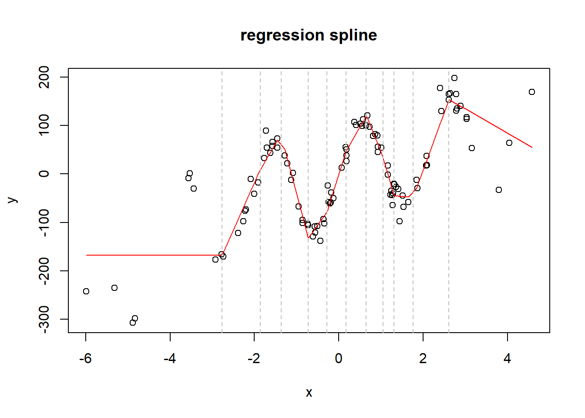

Since the origin of statistics, the most interesting problem of it was the prediction problem.
And beneath it, the regression problem, that is in most cases a least squares regression. That means that we want to predict a continuous variable Y given one or more other variables X. If You understand this last sentece, skip the intro sections of this article.
Intro
from expected value to conditional expected value
What does it mean to predict something?
Assume something is a random variable Y, that follows a distribution D of parameters \(\theta\) (in symbols we say \(Y \sim D(\theta)\)). If D has a first moment, also called Expected Value, that we call E(Y) , then that is the best prediction we can make of X. It is important to make some assumption about D: if D hasn’t an expected value (for example the Power Law and the Cauchy distribution don’t have it) then it is absolutely impossible to predict Y. However, in regression tasks, we often find a way to convert the problem of predicting any variable present in the data Y in a variable that can be considered Gaussian. The Gaussian distribution governs a real number that is near to the expected value of the distribution, also called the mean.
Attention! The mean and the variance here aren’t the mean and the variance. The mean and the variance are two statistics that we can compute from a sample of any variable. The mean and the variance are instead the parameters of a defined Gaussian distribution. So the mean is a number we can compute, while the mean is a parameter of the distribution: we can estimate it with the mean, if we are assuming that the variable we are studying follows a Gaussian distribution, or we know it for some reasons (e.g. we can generate sample with one variable that follows a gaussian using R or Python, see the rnorm command in R).
So in the Gaussian, if \(Y\sim N(\mu, \sigma)\) then \(E(Y) = \mu\), where \(N(\mu, \sigma)\) is just the Gaussian way of specify the general distribution \(D(\theta)\).
But the question was: what does it mean to predict something?
It does mean in general to work with its expected value. However, first of all, we have to know if we have other variables or just the random variable we have to predict. So we can have two main scenarios of a prediction task:
scenario A : We want to predict Y, but we have just some observations of it. This is the field of Sample Theory. Given a sample that contains many observations of Y, we just want to estimate E(Y). In this scenario, we often assume that Y is Gaussian (if it can take any real number or in some cases high positive numbers) or Bernoulli (in cases where Y can assume either value 0 or 1, such as the yes or no question to a referendum), and we estimate E(Y) with its mean. The most common example tasks about this are political polls, but also in marketing and medic industries it is common to use Sample Theory. The main problem is very often to predict a yes or no question (this party will be voted or not? This pharma cures the disease or not?) using the smaller sample possible (it costs a lot of money to make many interviews)
scenario B: We want to predict Y, but we have both observations of it with one or more other variables X. In this scenario, we know X for all the possible observations, but Y only for some of them. So we can exploit the additional information we have from X to get a better estimate of Y, that is no more just E(Y) but E(Y|X) (it is the expected value of Y given X). Well, this is the Field of Regression. And here there is also the deep origin of supervised learning, deep learning included.
prerequisites about linear algebra
If You know what dot product is, skip this section. It is almost impossible to really understand linear regression withouth using linear algebra. It is a branch of calculus really trivial, however not teached in many high schools. I will try to explain it in a really brutal and fast way.
Linear algebra works with objects that are called scalars, vectors and matrices.
A scalar is just a number. A vector is just a list of numbers. A matrix is a list of vectors of the same dimensions (or with rows and columns). A row vector is just a matrix with one row and a column vector is a matrix with one column.
Code
s1 =3v1 =c(3,4,1)m1 =matrix(c(2,4,1,-4,-3, 5), nrow=2)cat('example of scalar:',s1, '\n')
example of scalar: 3
Code
cat('example of vector:','\n')
example of vector:
Code
print(v1)
[1] 3 4 1
Code
cat('example of matrix:','\n')
example of matrix:
Code
print(m1)
[,1] [,2] [,3]
[1,] 2 1 -3
[2,] 4 -4 5
We can do only a few operations between vectors and matrices:
1- addition and subtraction:it is possible between two vectors with the same length or between two matrices with the same shape or between a scalar and a vector or between a scalar and a matrix.It is just the element wise addition and subtraction
2 - transposition: we transpose a matrix when we exchange the indexes of the rows and of the columns. If we transpose a vector (that is a matrix with n rows and 1 column, or viceversa) or if we transpose a scalar (that is a matrix with one row and one column) they don’t change. If the matrix has shape (2,3) than when trasposed its shape will become (3,2).
3 - multiplication between a scalar and a vector or between a scalar and a matrix: it is just the element wise product with the scalar of all the elements of the matrix. The shape of the output is the shape of the matrix.
4 - multiplication between a matrix and another matrix: This is more complicated. And is of course the most important part of this section. First think about the shapes of the two matrices: You have the first matrix of shape nxm and the second matrix of shape mxg. Note that this operation is legal / doable only if the second dimension of the first matrix is equal to the first dimension of the second matrix (it is m). If the operation is legal, the the output will be a matrix of shape nxg. Note that the dot product is possible between two vectors when they have the same length, and for them the result will always be a scalar: if I have a vector a of shape 1xm and a vector b of shape mx1 then the output will be a scalar (matrix of shape 1x1). We call outer product the product between two vectors when they have different length, but we multiply them along the one dimensional axis: if the first vector has shape nx1 and the second vector has shape 1xg then the condition of the equal dimensions is satisfied, and the output will be a matrix of shape nxg. Ok, but what values will get the cells of the output? They will get the linear combination of the rows of the first matrix with the columns of the second matrix. In other words, the cell at row i and column j of the output matrix will be the dot product between the i-th row of the first matrix and the j-th column of the second matrix. Here some examples
5 - inverse of a matrix: You don’t really need it to understand what follows. But we have to note that this operation is so heavy that even computers often can’t do that. It also requires that the matrix is not singular (another detail You can skip for now, since this condition is normally satisfied).
Regression: the old name of supervised learning
We can put it in a simple way: a regression is a way to estimate E(Y|X).
In a regression problem we have two samples. I will call them the training sample and the test sample.
The training sample is a table, with N rows and P+1 columns. The last column is Y, and the other columns are \(X_1, ..., X_p\). The test sample is also a table, but it can have any number of rows (also infinite) and P columns (with Y excluded).
In few words, the regression task is simple: predict Y given X in the test sample.
So we do this in two steps:
1- build the model: training step: in this step we adapt (or fit, or regress) a specific function $f(x_i;) y_i $ with some unknow paramters \(\theta\) to the training sample. Here \(i=1,...,N\) is the index of an observation in the training sample (a row of the table). Before this step we know everything of \(f(x_i;\theta)\) except \(\theta\). After we know that too.
2- use the model: testing step: for all the rows of the test table, where Y is unkwon, estimated it with the function \(f(x, \theta)\) that is now completely known. This step can go on for the eternity: if the model is useful and valid, we can use it for an infinitely large number of observations.
Nowadays the word supervised learning is more used to point this concept. It is supervised because the example output in the training step is given. There are statistical models that have to return an output that is not given as example neither in the training step (that is the world of unsupervised learning, and that is another story).
However, the word supervised learning is used to include two different tasks: regression and classification.
In old days, the word regression was used for everything, because all the models used to predict anything where linear models:
LEAST SQUARES REGRESSION where used to predict continuous random variables (e.g. any real number)
logistic regression and multinomial regression (also called softmax regression) where used to predict binary (for logistic) or categorical (for multinomial) random variables, so they are now included in the classification area.
Why we call them least squares regression and logistic regression?
We call it least square regression because we find in it the parameters \(\theta\) using the MSE loss function.
In the least square regression we need to minimize
From so least square because we what to minimize the differences squared between the real value and the predicted value.
We call the other models logistic regression and multinomial/softmax regression for different reasons. The word logistic comes from the logit function, a non linear transformation of the predicted value of it. The same is valid for the word softmax. The word multinomial comes from the name of the distribution that governs a categorical variable with more that two classes.
It can be seen that the logit function is just the binary case of the softmax function.
The logistic regression function is just a linear model, with the same linear structure of the least square model, that is then passed to the logit function.
The multinomial regression function is just a linear model (one for each category), with the same linear structure of the least square model, that is then passed to the softmax function.
These two models don’t use the MSE as loss function, but other types of losses (tipically a thing called negative log likelihood).
What all these models have in common? They can estimate all their parameters with maximum likelihood estimation, a process that exploits the distribution of \(Y\) to estimate \(\theta\). However, usually there are more model specific and efficient ways to estimate their parameters.
Why we have switched from the regression tag to the supervised learning tag? Because some new models, mainly the tree based models introduced by Breiman in the 90s, and the deep learning models that have been more popular since the pytorch diffusion in 2014, can be also described as trained functions with known structure but unknow parameters \(\theta\), but have two main differences from the older regression models:
they are always non linear functions
is hard, if not impossible, to fit them with maximum likelihood estimation
So, now we can also say what is least square regression: supervised learning with a continuous variable. That was simple. Why have I talked for so long since here?
Least square regression
OLS
Finally, we can specify the first model used to predict something: the OLS (Ordinary Least Squares). This model was invented by Gauss in old ages. Then Fisher resurrected it in the 30s when he found a way to proof that the same model could be estimated using Maximum Likelihood Estimation (MLE). He actually invented MLE in that same occasion, and that is considered the main moment in which Statistic was born as a science, detaching itself from Probability Theory, that was a branch of Mathemathics. For this reason there is a little of confusion between who should be considered the father of Statistics: Gauss or Fisher? But it is almost certain that the father of statistics is the father of OLS. And we can also say that OLS is the first regression model ever invented. And so we can say that Statistics was born with the first regression model, and so with supervised learning. Say this to the next mathematician that will pretend that statistics is a branch of probability theory. Statistics is originated by probability theory, but it is mainly a science of practice. We can say that statistics is mainly based on probability distributions, that are core concepts of probability theory, and this is true. However, the main distinction between Statistics and Probability Theory is the fact that the first is not just theory. It is applied to data. And the more common tasks of it are regression tasks.
Ok, I know that this was a digression, and not a regression, but history is important, don’t underestimate it.
What is OLS, in few words? The words are not few, but the formulas are.
Assume Y is a vector of length N (the Y column in the training data). Assume X is a matrix of shape Nxp (the X columns in the training data).
The function \(f\) we want to use to predict y given x is this:
Ok, here is possible to make some confusion. Assume that \(\beta\) is a vector of length \(p\). Assume \(x_i\) is a vector of length \(p\) too. We see that \(\beta\) hasn’t the index \(i\), because is the fixed set of parameters of this model (it is all what \(\theta\) consist of). What can be confusing is the first term of \(x_i\), that I called \(x_i1\). Well, it is 1 for all the observations. It is strange to specify it in this way, but it will become clear. In the X table (that now should have only P-1 columns) I add a new column that contains only and always 1. Why? Because it is the intercept of the model: it is the value of the prediction when all the x variables are 0. So \(x_{1i}=1 \forall i\) and \(x_{1i}\beta_1=\beta_1\)
Finally, You should know a little bit of linear algebra to know that \(x_i\beta\) is the dot product of two vectors of the same length, and that it returns a scalar. You should know what are dot products and products between vectors and matrices to understand what comes now (and also other sections of this article).
Ok, in the OLS model how can we find \(\beta\) ? with this formula:
\[\beta = (X'X)^{-1}X'Y\]
where \(X\) is a matrix of dim Nxp and Y is a column vector of length N.
Here we should give a better explanation of two things about this formula:
1 - the proof: why this formula works? Is it the real value of \(\beta\) that minimizes the MSE? How can we derive it?
2 - the computational problem: You can see that the first term requires to compute the inverse of a pxp matrix. It is never easy to compute the inverse of a matrix, but here we can use some computational tricks.
If You want to implement Your own linear regression model, You don’t need to know the first, but You absolutely need the second. If You want to understand why linear regression works, You need the first and You don’t need the second. I had needed both, for my little experience. However, to understand the core of other models just this final formula is more than enougth. So I will leave this two details at the end of this article.
WLS
Ok, imagine now that some observations are more important than others. For some reasons You know that some errors on some observations should be smaller, because these observations are more important, and others can be higher. If You are in this scenario, and You have a diagonal NxN matrix of weights W, then the optimal estimate for the coefficients is:
\[\beta = (X'WX)^{-1}X'WY\]
This model is called Weigthed least squares (WLS).
link functions
I can model non linear relationships between X and Y if I apply a non linear function, that is called for this reason link function, to Y. For example the logit of the logistic regression is a link function, because it is used to make linear the relationship between X and Y. Another link function widely used is the log: when Y is gamma or poisson distributed, is often true that applying the log to it (or the Box-Cox transform, if You know what it is), it will become marginally gaussian. In regression models, We need Y to become conditionally gaussian respect to X, and often the log is enougth to do that. To estimate \(\beta\) in this models, simply replace Y with G = g(Y), where g is the link function.
Then estimate \(\beta\) using the training sample:
\[\beta = (X'X)^{-1}X'G\]
finally Your prediction will be:
\[\hat{y_i} = g^{-1}(x\beta)\]
Ok, but this works only when Y is a continuous variable (gamma or exponential distributed). For Poisson and Bernoulli variables, You will have to use MLE to estimate \(\beta\). Once You have it the inference process is the same.
Polynomial fitting
What if I apply non linear transformations to the X columns, so that I can describe more complex relationships between X and Y? We can use polynomials for this. If we add not just \(x\) but also \(x^2\) and \(x^3\) and so on to the regression terms (as columns of the matrix X) then we can fit for example a parabola and not just a line to the data!
Non linear fitting and basis functions
The same strategy that is commonly used to fit polynomials in the model can be applied to any other transformation of the X. We call basis functions all the simple functions that can be used to replace x with something different, that can get a higher correlation with the response Y. An example of this are the sine and cosine functions used to model seasonalities in time series forecasting (a famous area of statistics where linear models preserve their role, also over deep learning methods).
regression splines and bsplines
Finally, we come to the end of our travel: the splines! They are another way of fitting non linear functions. However, they are far more robust and simple than trying to fit all the possible basis and polynomial transformations to the Y values. The key idea of splines is in the knots: these are thresholds values of each x, where the coefficient of the x changes after each knot. In this way, instead of using a complex polynomial fitting, we can just build a piecewise linear or quadratic function that connects X and Y. The basis function used for the knot is the hinge function. The bsplines are like the classical splines, but they use some basis functions to build a smoother spline.
Code
##data generationN =103set.seed(42)x =rnorm(N, 0, 2)y =sin(x*3) *100+ x^2-exp(x) + x^3+rnorm(N,0, 20) +20*x##spline fitting##I choose the knots as some random quantiles of xmyk =quantile(x, seq(0,1,0.08))myk = myk[-c(1, length(myk))]xmat =rep(1,N)for (k in myk){ hinge_a = x - k hinge_a[hinge_a<0] =0 xmat =cbind(xmat, hinge_a)}df =data.frame(y=y)colnames(xmat) =paste0(colnames(xmat),1:ncol(xmat))df =cbind(df, xmat)spline =lm(y~.+0, data=df)preds =predict(spline, df)plot(x,y, main='regression spline')lines(x[order(x)],preds[order(x)], col='red')for (q in myk){abline(v=q, lty='dashed', col='grey')}

MARS
Like classical splines, bsplines have a major problem: the user has to specify the knots manually. To solve this, the MARS (Multivariate Adaptive Regression Splines) came into play. These are algorithms that use a greedy search to add knots to the original model. They add pairs of knots for two different variables at each iteration, improving the interaction between multiple X variables (each of them modeled with a spline). They also have a stopping criteria: if the best pair of knots added doesn’t produce an improvement over the R^2 of the regression model higher than 0.01, then it stops. With MARS, the user hasn’t to specify neither the number of knots neither where they are. MARS is maybe the best linear model of ever. But attention: it is also really flexible, and can overfit. It is said that the MARS model is efficient as much as the GAM.
Ridge regression: from overfitting to penalization
Since now I have covered how much a linear regression model can be expanded. However, due to the risk of overfitting, is more convenient to compress it, forcing the majority of its parameters to be near to 0. In the Ridge regression model we can add a penalization parameter \(\lambda\), between 0 and 1, that helps to do this. This is especially useful when the number of variables in the matrix X is very high, and we want to force the model to simplify itself, removing the contributions of some useless variables. Then the formula for the coefficients becomes:
\[\beta = (X'X+\lambda I)^{-1}X'Y \]
It can be proofed that the ridge regression model is a bayesian regression model where the coefficient \(\beta\) are distributed under a normal with mean 0 and variance \(\frac{1}{\lambda}\). This kind of penalization is also called penalization L2. There is another penalization model, the Lasso, where the penalty is of type L1, and it is also a bayesian model where the coefficients follow a laplacian distribution, also centered at 0. However, the fitting of the Lasso requires more complex algorithms (it covers the area of Convex Numerical Optimization) and this add complexity and computational costs. The Ridge regression is maybe less perfect that the lasso, but it is also far more simple and efficient. There is also a third way of penalize the models, that is the elsasticnet model, a mix of lasso and ridge. Maybe the difference between these three methods is not so high.